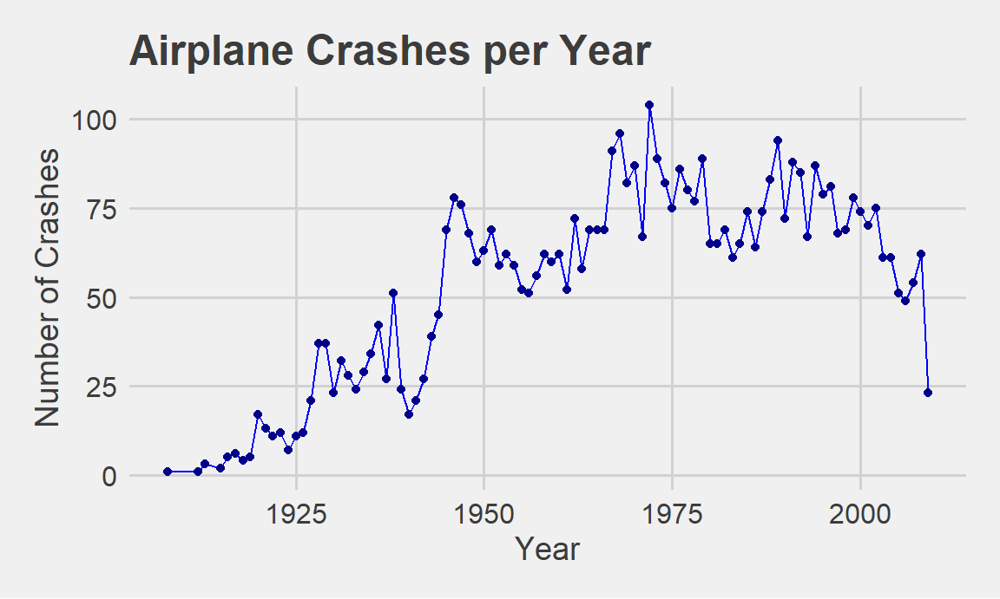

Descriptive Statistics
2025-11-22
This file contains the final drafts of the plots we want to use in our website and the trends noted in each.
Loading and cleaning the data.
airplane_df = read_csv("datasets/airplane_crashes_data.csv") |>
janitor::clean_names() |>
filter(ground != "NULL", aboard != "NULL") |>
# removes unnecessary columns for our analyses
select(-flight_number, -time, - registration)## Rows: 5268 Columns: 13
## ── Column specification ─────────────────────────────────────────────────────────
## Delimiter: ","
## chr (10): Date, Time, Location, Operator, Flight #, Route, Type, Registratio...
## dbl (3): Aboard, Fatalities, Ground
##
## ℹ Use `spec()` to retrieve the full column specification for this data.
## ℹ Specify the column types or set `show_col_types = FALSE` to quiet this message.Converting 2 digit years to four digit years.
airplane_df = airplane_df |>
mutate(
# remove leading and trailing spaces
date = str_trim(date),
# extract month, day, and year from the date string
m = as.numeric(sub("/.*", "", date)),
d = as.numeric(sub(".*/(.*)/.*", "\\1", date)),
y = as.numeric(sub(".*/(.*)$", "\\1", date)),
# convert 2-digit years (<100) to 4-digit (1900s)
y = ifelse(y < 100, y + 1900, y),
# rebuild the string
date_clean = paste(m, d, y, sep = "/"),
# convert to Date type
date = mdy(date_clean),
# extract numeric year and month
year = year(date),
month = month(date),
month_name = factor(month(date,
label = TRUE,
abbr = TRUE),
levels = month.abb)
) |>
select(-m, -d, -y, -date_clean) # remove unnecessary columnsConverting variables to their proper variable types.
airplane_df = airplane_df |>
mutate(
aboard = as.numeric(aboard),
fatalities = as.numeric(ground),
operator = as.factor(operator) # to group by operator
)Creating a decade column, now that year is numeric.
airplane_df = airplane_df |>
mutate(
decade = floor(year / 10) * 10,
decade = paste0(decade, "s")
) |>
select(date, year, decade, month, month_name, everything()) Final Plots
airplane_df |>
group_by(year) |>
summarize(total_crashes = n()) |>
ggplot(aes(x = year, y = total_crashes)) +
geom_line(color = "blue") +
geom_point(color = "darkblue") +
labs(
title = "Airplane Crashes per Year",
x = "Year",
y = "Number of Crashes"
) +
theme_fivethirtyeight() +
theme(
axis.title = element_text(size = 14), # keep axis titles
axis.text = element_text(size = 12) # keep axis tick labels
)
In the early years of flight, there were not as many airplanes in the sky, so the relatively low number of crashes from the early 1900s to 1940 make sense. Beginning in the late 1940s to early 50’s, more people started flying, which coincides with an increase in crashes. The commercial jet service was introduced in 1952, which is where we see a steady increase in crashes after that.
airplane_df |>
group_by(year) |>
summarize(avg_aboard = mean(aboard, na.rm = TRUE), .groups = "drop") |>
ggplot(aes(x = year, y = avg_aboard)) +
geom_line(color = "darkorange", size = 1) +
geom_point(color = "orange", size = 2) +
labs(
title = "Average Number of People on Planes per Year",
x = "Year",
y = "Average Number of People"
) +
theme_fivethirtyeight() +
theme(
axis.title = element_text(size = 14), # keep axis titles
axis.text = element_text(size = 12) # keep axis tick labels
)
It is useful to see the general trends in the number of people on planes per year. Overall, there is a steady upward trend in the number of people on planes as air travel became more widely tested and popularity grew.
airplane_df |>
group_by(operator) |>
summarise(total_crashes = n(), .groups = "drop") |>
slice_max(total_crashes, n = 15) |> # select the top 15 operators
ggplot(aes(x = reorder(operator, total_crashes), y = total_crashes )) +
geom_col(fill = "blue") +
coord_flip() +
labs(
title = "Top 15 Airline Operators with the Most Crashes",
x = "Airline Operators",
y = "Number of Crashes"
) +
theme_fivethirtyeight() +
theme(
axis.title = element_text(size = 14)
) 
Aeroflot, the largest airline in Russia, is by far the commercial airline with the greatest crashes at 187 total crashes. The U.S. Air Force, a military airline, comes in close second at 182 total crashes.
airplane_df |>
filter(!is.na(type)) |>
group_by(type) |>
summarize(total_crashes = n(), .groups = "drop") |>
slice_max(total_crashes, n = 15) |>
ggplot(aes(x = reorder(type, total_crashes), y = total_crashes)) +
geom_col(fill = "darkgreen") +
coord_flip() +
labs(
title = "Aircrafts with the Most Crashes",
x = "Number of Crashes",
y = "Aircraft Type"
) +
theme_fivethirtyeight() +
theme(
axis.title = element_text(size = 14)
) 
The Douglas DC-3 has had by far the most crashes out of all the aircraft types. Most of the planes in this graph are Douglas aircrafts. Interestingly, the Douglas DC-3 became the most successful airliner in the formative years of air transformation, and was the first to fly profitably without government subsidy.
Is there a certain place in the world that has the most crashes?